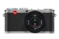

器材库 > 不可换镜头数码相机 > X1

规格总览
发布日期
2009-09-09
影像规格
影像传感器
CMOS
影像传感器尺寸
23.6 x 15.8 mm
总像素
1290万
有效像素
1220万
静态图像尺寸
4272 x 2586 Pixel (12.2M), 3264 x 2160 Pixel (7M), 2144 x 1424 Pixel (3M), 1632 x 1080 Pixel (1.8M)
静态图像格式
JPEG, DNG
画幅比
3:2
镜头和对焦
镜头结构
8片/6组
非球面镜片
1片
焦距
24mm
等效35mm画幅焦距
36mm
最大光圈
f/2.8
最近对焦距离
60cm, 微距30cm
AF辅助灯
有
曝光控制
测光模式
中央重点测光, 评价测光, 点测光
快门速度
30 - 1/2000秒
曝光补偿
±3EV以1/3EV级调整
自动包围曝光
1/3 - 3EV步长，3幅
连拍
3 fps / 2 fps，最多6张（JPEG fine+DNG）
闪光灯
内置闪光灯
弹出式
闪光模式
自动, 慢速同步, 减轻/消除红眼, 强制闪光, 减轻红眼慢速同步
外接闪光灯
SF24D, SF58
取景规格
LCD类型
彩色TFT LCD
LCD尺寸
2.7英寸
LCD像素
23万
视野率
100%
文件输入/输出
内置存储容量
50MB
存储卡
SD/SDHC
数据接口
USB2.0
视频/音频接口
AV 输出, HDMI 输出
配件端口
热靴
电源
电池
锂离子充电电池
续航能力
可拍摄约260张（CIPA标准）
外观
颜色
黑色
尺寸
124×59.5×32mm
重量
286g
其它
附件
可充电电池BP-DC8, 电池充电器BC-DC8, 电池盖, 皮革背带, 用户手册, USB线缆, 镜头盖, 软件光盘
软件
AdobePhotoshop Lightroom
promise3232014-02-16 15:434.56 分
操作性 4.50功能性 5.00美观性 5.00趣味性 4.00耐用性 5.00性价比 3.00解像力 5.00色彩还原 5.00
jeep50422013-01-11 21:104.38 分
操作性 5.00功能性 5.00美观性 5.00趣味性 3.00耐用性 5.00性价比 2.00解像力 5.00色彩还原 5.00
malcolm2012-09-25 00:103.88 分
操作性 3.50功能性 3.50美观性 4.50趣味性 4.00耐用性 4.00性价比 3.50解像力 3.50色彩还原 4.50
didizhang2012-09-17 23:273.19 分
操作性 4.50功能性 4.00美观性 5.00趣味性 1.50耐用性 0.50性价比 1.50解像力 4.00色彩还原 4.50
铁骨2012-05-15 12:084.5 分
操作性 5.00功能性 5.00美观性 5.00趣味性 3.00耐用性 4.50性价比 3.50解像力 5.00色彩还原 5.00
薛神医2012-04-20 17:494 分
操作性 3.50功能性 4.50美观性 5.00趣味性 5.00耐用性 3.00性价比 1.00解像力 5.00色彩还原 5.00
csy70052012-04-06 13:074.38 分
操作性 5.00功能性 4.50美观性 5.00趣味性 4.50耐用性 4.00性价比 2.00解像力 5.00色彩还原 5.00
iCafe2012-04-03 01:464.75 分
操作性 4.50功能性 5.00美观性 5.00趣味性 5.00耐用性 4.50性价比 4.00解像力 5.00色彩还原 5.00
iCafe2012-04-02 18:31
lucktomx12011-08-19 15:304.81 分
操作性 5.00功能性 4.50美观性 5.00趣味性 5.00耐用性 5.00性价比 4.00解像力 5.00色彩还原 5.00
youyusishi2011-05-04 14:564.69 分
操作性 4.50功能性 4.50美观性 5.00趣味性 5.00耐用性 4.50性价比 4.00解像力 5.00色彩还原 5.00
londonrain2011-03-26 09:523.44 分
操作性 2.50功能性 3.50美观性 5.00趣味性 3.50耐用性 3.50性价比 1.00解像力 4.00色彩还原 4.50
didizhang2011-02-10 15:31
花生的天空2011-01-13 23:074.75 分
操作性 4.00功能性 4.00美观性 5.00趣味性 5.00耐用性 5.00性价比 5.00解像力 5.00色彩还原 5.00
lodgelu2011-01-03 21:084 分
操作性 4.00功能性 5.00美观性 4.50趣味性 5.00耐用性 3.00性价比 2.00解像力 4.50色彩还原 4.00
yujinz2010-12-26 23:204.56 分
操作性 4.00功能性 4.50美观性 5.00趣味性 4.50耐用性 4.50性价比 4.00解像力 5.00色彩还原 5.00
为我舞动2010-12-17 10:28
yearnnice2010-11-13 16:584.5 分
操作性 4.00功能性 4.50美观性 5.00趣味性 4.50耐用性 5.00性价比 4.00解像力 5.00色彩还原 4.00
DarthYoda2010-11-04 22:194.38 分
操作性 5.00功能性 5.00美观性 5.00趣味性 5.00耐用性 4.00性价比 1.00解像力 5.00色彩还原 5.00
nikonjeep2010-08-10 08:394.81 分
操作性 5.00功能性 5.00美观性 5.00趣味性 5.00耐用性 5.00性价比 3.50解像力 5.00色彩还原 5.00
superiori2010-07-18 01:104.19 分
操作性 5.00功能性 4.50美观性 5.00趣味性 4.00耐用性 3.00性价比 3.00解像力 4.00色彩还原 5.00
谭涤平2009-12-20 12:084.38 分
操作性 5.00功能性 4.00美观性 5.00趣味性 3.00耐用性 4.50性价比 3.50解像力 5.00色彩还原 5.00
产品图 / 样片
正面
评测 / 相关文章
- 详细内容 （存档）
- 顶级数码袖珍相机 徕卡x1试用报告 （存档）
- 寻访即将逝去的南市 徕卡x1试片 （存档）
- ［行色］泡菜试机 Leica X1随拍 （存档）
- ［资讯］徕卡X1发布最新固件 （存档）
- ［行情］徕卡专场兔年迎新春精彩促销第七波！ （存档）
- ［资讯］徕卡推出X1宝马限量版 （存档）
- ［影像］泡菜体验 徕卡X1的小心得 （存档）
- ［行情］回归正常 徕卡X1目前报价12900元 （存档）
- ［资讯］徕卡X1黑色Jochen Rindt限量版国内到货 （存档）
- ［资讯］徕卡发布黑色Jochen Rindt限量版X1 （存档）
- ［资讯］日本影音家电权威大奖VGP 2011公布 （存档）
- ［资讯］徕卡黑色版X1欧洲上市 （存档）
相关文章
- ［试用］我的徕卡团队恒河之旅 （原站已下线）
- ［行色］泡菜试机 Leica X1随拍 （存档）
- ［资讯］徕卡X1发布最新固件 （存档）
- ［行情］徕卡专场兔年迎新春精彩促销第七波！ （存档）
- ［资讯］徕卡推出X1宝马限量版 （存档）
- ［影像］泡菜体验 徕卡X1的小心得 （存档）
- ［行情］回归正常 徕卡X1目前报价12900元 （存档）
- ［资讯］徕卡X1黑色Jochen Rindt限量版国内到货 （存档）
- ［资讯］徕卡发布黑色Jochen Rindt限量版X1 （存档）
- ［资讯］日本影音家电权威大奖VGP 2011公布 （存档）
- ［资讯］徕卡黑色版X1欧洲上市 （存档）